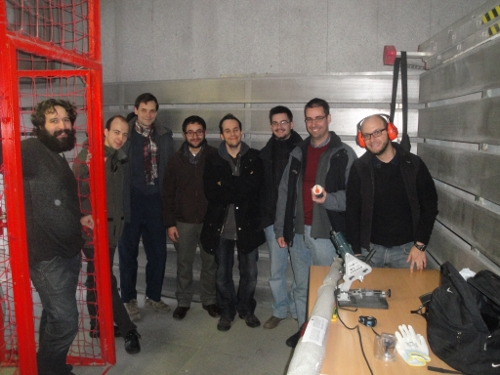

El viernes 29 de Enero quedamos unos cuantos del
proyecto Clone wars en el MediaLab Prado Madrid.
La reunión fue convocada por César Augusto Fernández (skymaker) y
Juan Manuel Amuedo (Coleóptero).
César se llevó su radial para cortar varillas lisas y roscas para 4 Prusas. La verdad es que con un bicho de estos se cortan como mantequilla:


Aquí están algunas de las varillas. Las roscadas se pueden comprar en cualquier ferretería. Las varilas lisas César las compró en RS. Yo no sabía que allí las tenían.

Por último César nos estuvo enseñando los moldes de silicona que tiene hechos para poder hacer las piezas de la Prusa de manera más rápida. ¡Es la solución perfecta para clonar rápidamente! Me quedé impresionado por la calidad de los moldes. Es una técnica que yo desconocía. Me gustó especialmente la idea de imprimirse los positivos de los moldes en una impresora 3D para a partir de ellos hacer los moldes de silicona. ¡Todo un descubrimiento! ¡Gracias César! 🙂

Y como no podía ser de otra manera, terminamos tomando unas cervecitas en el museo del Jamón, al lado del MediaLab 😉